수치를 모으고, 질문하고, 그리기까지
— 메트릭 모니터링의 최소 구성 한 바퀴
top을 치는 순간, 이미 늦었다$ top Processes: 612 total, 3 running CPU usage: 78.4% user, 9.1% sys # 그래서 30분 전에는? …기록이 없다
| 요소 | 설명 | 대표 도구 | 오늘 |
|---|---|---|---|
| Metrics | 시간에 따른 수치 데이터 — CPU, 메모리, 요청 수 | Prometheus, Datadog | 다룬다 |
| Logs | 이벤트 기록 — 에러 메시지, 요청 로그 | Loki, ELK Stack | 편 외 |
| Traces | 요청의 흐름 추적 — 서비스 간 호출 경로 | Tempo, Jaeger | 편 3 |
| 편 | 제목 | 다루는 영역 |
|---|---|---|
| 편 1 | Prometheus와 Grafana 기초 | Metrics 기초 |
| 편 2 | Go 애플리케이션 커스텀 메트릭 | Metrics 심화 |
| 편 3 | Grafana Tempo 분산 트레이싱 | Traces |
| 편 4 | Grafana Pyroscope Continuous Profiling | Profiles |
오늘 나오는 화면 중 일부는 편 2에서 만드는 샘플 앱의 메트릭을 미리 당겨 쓴 것이다.
오늘 구축하는 환경만으로는 node-exporter와 Prometheus 자체 메트릭까지 볼 수 있다.
01 — Prometheus 핵심 개념
02 — PromQL
03 — Grafana
04 — 실전 구축
메트릭이 어떻게 들어오고, 어떤 모양으로 저장되는가. 여기를 이해하면 뒤의 PromQL과 대시보드는 그 위에 얹히는 이야기다.
대상이 /metrics HTTP 엔드포인트만 열어두면, Prometheus가 주기적으로 그 주소를 호출해(scrape) 값을 긁어온다. 대상 쪽은 어디로 보낼지 몰라도 된다.
화살표는 데이터가 흐르는 방향이다. 호출은 반대로 일어난다 — Prometheus가 타겟의 /metrics를 부른다.
| 비교 항목 | Pull — Prometheus | Push — Datadog, InfluxDB |
|---|---|---|
| 데이터 흐름 | 서버가 타겟에서 가져감 | 타겟이 서버에 보냄 |
| 서비스 디스커버리 | 필요 — 어디를 scrape할지 알아야 함 | 불필요 — 타겟이 직접 전송 |
| 네트워크 요구 | 서버 → 타겟 접근 필요 | 타겟 → 서버 접근 필요 |
| 장점 | 타겟 상태 확인 가능 — scrape 실패 = 장애 | 방화벽 뒤 환경에서 유리 |
| 단점 | 방화벽 뒤 타겟 수집 어려움 | 타겟 장애 시 데이터 유실 감지 어려움 |
| 타입 | 특징 | 사용 예시 | 주요 함수 |
|---|---|---|---|
| Counter | 감소 없이 증가만 한다 (재시작하면 0) | HTTP 요청 수, 에러 수 | rate(), increase() |
| Gauge | 오르내린다 | CPU 사용률, 메모리, 활성 연결 수 | 직접 조회, avg_over_time() |
| Histogram | 값의 분포를 버킷에 나눠 담는다 | 응답 시간, 요청 크기 | histogram_quantile() |
| Summary | 분위수를 미리 계산해 저장한다 | 응답 시간 (클라이언트 계산) | 직접 조회 |
http_requests_total
읽어낼 수 있는 건 “계속 올라간다” 정도다. 14시 11분에 바닥으로 떨어진 건 애플리케이션 재시작이다.
rate(http_requests_total[5m])
초당 5~10건, 실제 요청량이 드러난다. 재시작 지점에서도 선이 튀지 않는다 — 카운터 리셋을 자동 보정하기 때문.
rate()부터 떠올린다.
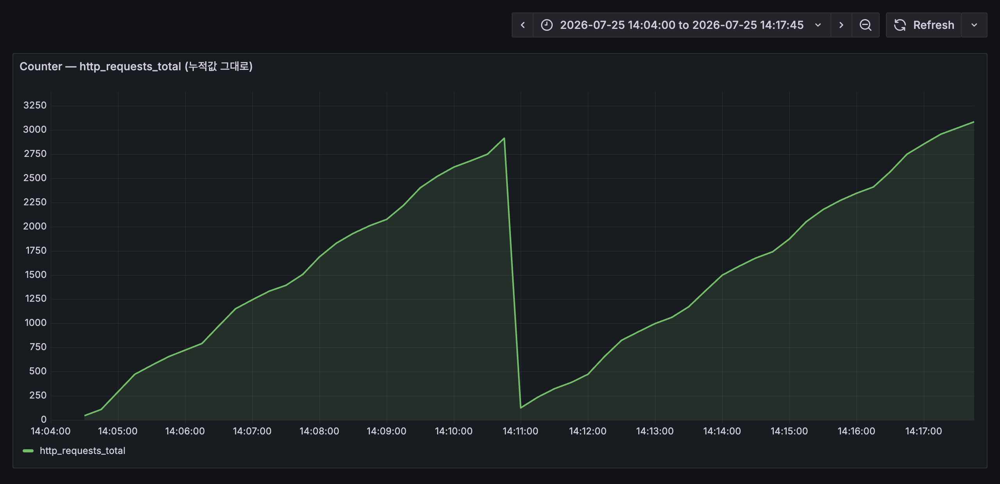
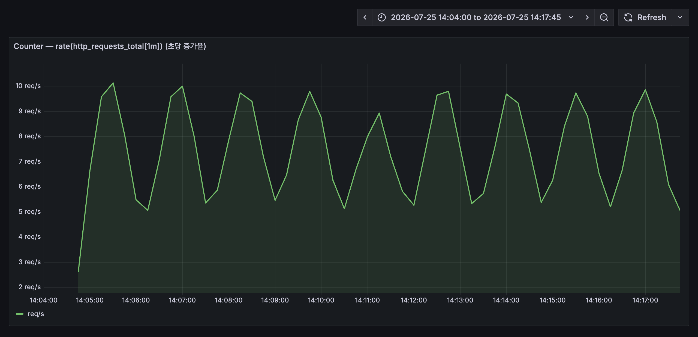
rate()를 씌울 일이 없다# 현재 활성 요청 수 http_requests_in_flight # 5분 평균 avg_over_time(node_cpu_seconds_total{mode="idle"}[5m])
여기서도 14시 11분 재시작 지점에 메모리가 잠깐 줄었다 다시 차오르는 게 보인다.
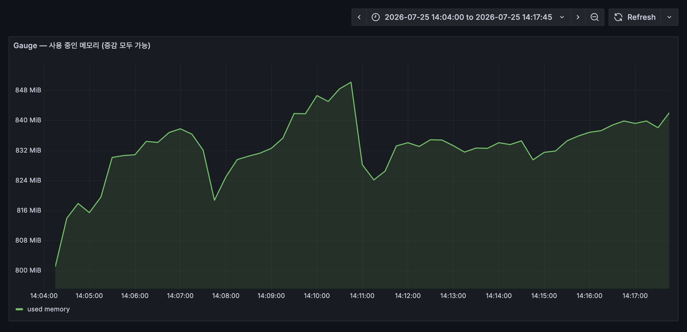
le="0.5" 버킷 = 0.5초 이하 전부. 0.25~0.5초 구간이 아니다Heatmap으로# P99 응답 시간 histogram_quantile(0.99, rate(http_request_duration_seconds_bucket[5m]))
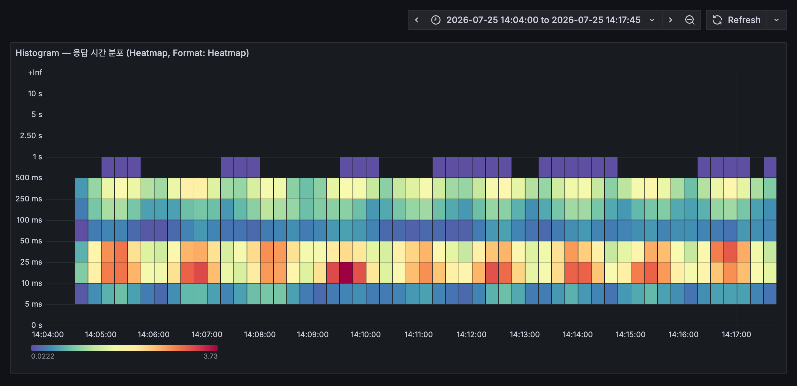
| 비교 항목 | Histogram | Summary |
|---|---|---|
| 분위수 계산 위치 | 서버 (쿼리 시점) | 클라이언트 (수집 시점) |
| 여러 인스턴스 합산 | 가능 | 불가능 |
| 버킷/분위수 변경 | 설정 변경 후 재시작 | 코드 변경 필요 |
| 권장 사용 | 대부분의 경우 | 정확한 분위수가 꼭 필요할 때 |
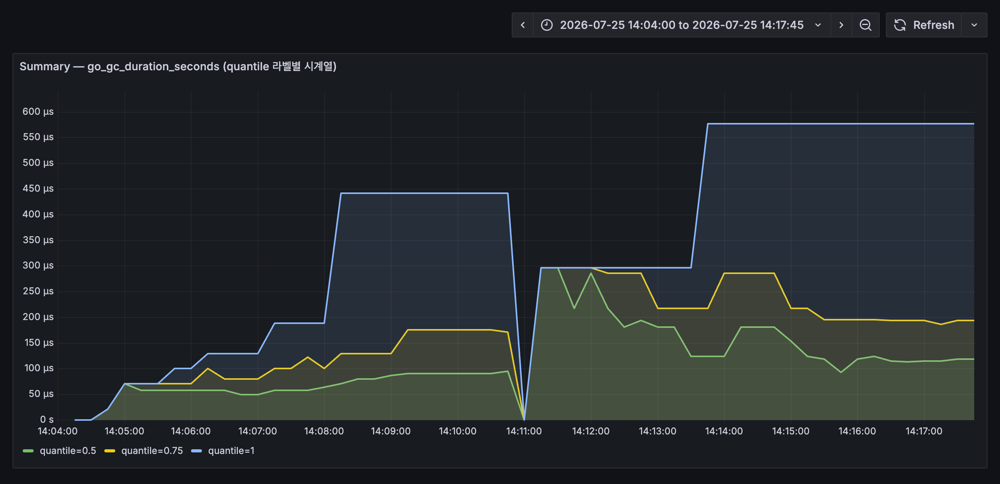
시계열 = 이름표 하나에 (시각, 값) 쌍이 계속 붙어 나가는 목록. 그래프의 점 하나하나가 이 목록의 한 줄이다.
시각 값
14:30:00 1,204
14:30:15 1,251 ← 15초마다 한 줄 (scrape 주기)
14:30:30 1,298
14:30:45 1,344
이름표가 하나뿐이면 “요청이 늘었다”까지만 읽힌다. 어느 API가, 그중 실패가 몇 건인지는 이 숫자 안에 없다. 그래서 꼬리표(Label)를 붙인다.
http_requests_total{method="GET" , path="/api/orders", status="200"}
http_requests_total{method="POST", path="/api/orders", status="201"}
http_requests_total{method="POST", path="/api/orders", status="500"}
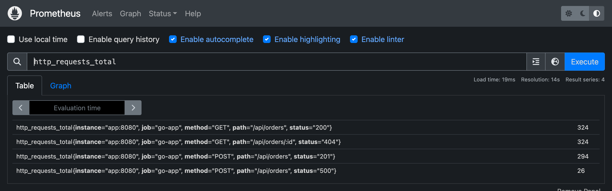
시계열 하나하나가 메모리를 차지한다. Prometheus는 그대로 주저앉는다. 이걸 카디널리티 폭발이라고 부른다.
Label로 써도 된다
methodstatuspath로그로 보내라
user_idsession_idhttp_requests_total은 Prometheus에 미리 들어 있는 게 아니다. 전부 누군가 코드에 적어 넣은 이름이다.
var HttpRequestsTotal = prometheus.NewCounterVec( prometheus.CounterOpts{ Name: "http_requests_total", Help: "Total number of HTTP requests", }, []string{"method", "path", "status"}, )
세 번째 인자가 이 메트릭이 쓸 Label 이름이다. Prometheus 입장에서 이름은 그냥 문자열이라
my_stuff_counter라고 지었어도 똑같이 동작한다.
| 공식 명명 규칙 | 예 |
|---|---|
| 도메인 한 단어를 앞에 | node_ · process_ · prometheus_ |
| 단위를 복수형으로 뒤에 | _seconds · _bytes |
| 누적 카운트는 _total로 | http_requests_total |
| 이름의 출처 | 누가 정하나 |
|---|---|
| node_cpu_seconds_total | exporter 제작자 |
| go_gc_duration_seconds | 라이브러리가 자동 등록 |
| http_requests_total | 애플리케이션 개발자 |
이름을 외울 필요는 없다. curl -s :9090/api/v1/metadata로 물어보거나, Prometheus UI 입력창의 자동완성을 쓴다.
# TYPE http_requests_total counter http_requests_total{method="GET",path="/api/orders",status="200"} 272 http_requests_total{method="POST",path="/api/orders",status="201"} 64 http_requests_total{method="POST",path="/api/orders",status="500"} 8 # TYPE http_requests_in_flight gauge http_requests_in_flight 0 # TYPE http_request_duration_seconds histogram ..._bucket{le="0.1"} 7 ..._bucket{le="0.25"} 32 ..._bucket{le="0.5"} 72 ..._bucket{le="+Inf"} 72 ..._sum 19.577 ..._count 72 # TYPE go_gc_duration_seconds summary go_gc_duration_seconds{quantile="0.5"} 4.82e-05 go_gc_duration_seconds_sum 8.74e-05 go_gc_duration_seconds_count 2
# TYPE 줄이 타입의 출처다. #으로 시작하지만 주석이 아니라 메타데이터다7 → 32 → 72로 커지다 유지되는 게 누적이다. 72건 전부가 0.5초 안에 끝났다는 뜻Grafana 패널 하나가 결국 PromQL 쿼리 한 줄이다. 대시보드를 만들려면 이건 피해갈 수 없다.
http_requests_total 중에서 → status="500"인 것만 골라 → 최근 5분 구간을 → 초당 증가율로 바꾸고 → path별로 합친다.
| 연산자 | 뜻 | 예시 |
|---|---|---|
| = | 값이 같은 것 | {method="GET"} |
| != | 값이 다른 것 | {device!="lo"} |
| =~ | 정규식에 맞는 것 | {status=~"5.."} |
| !~ | 정규식에 안 맞는 것 | {path!~"/health.*"} |
{status=~"5.."}에서 .은 아무 문자 하나. 500·502·503이 전부 걸린다 — 즉 “5xx 전체”.
# 조건을 쉼표로 이으면 모두 만족하는 것만 남는다 http_requests_total{method="GET", status=~"5.."}
네트워크 패널에서 device!="lo"로 loopback을 빼는 것도,
디스크 패널에서 mountpoint="/"로 하나만 고르는 것도 전부 이 자리에서 일어난다.
[5m]이 붙으면 달라지는 것PromQL에서 제일 헷갈리는 지점. 함수마다 요구하는 입력의 모양이 다르기 때문이다.
instant vector — 지금 값 하나
http_requests_total
# 시계열마다 값 1개 (예: 1,344)
Gauge를 그냥 볼 때는 이걸로 충분하다.
range vector — 기간에 쌓인 값 전부
http_requests_total[5m] # 시계열마다 값 20개 (15초 × 5분)
rate()는 “늘어난 양 ÷ 걸린 시간”이라 값이 최소 둘 필요하다.
rate(http_requests_total[5m]) ✓ 동작 rate(http_requests_total) ✗ 에러
| 함수 | 뜻 |
|---|---|
| sum() | 전부 더한다 |
| avg() | 평균을 낸다 |
| max() / min() | 최댓값 / 최솟값 |
| count() | 시계열이 몇 개인지 센다 |
sum(rate(http_requests_total[5m])) → 전체 요청량 · 선 1개 sum by(path) (rate(http_requests_total[5m])) → path별 요청량 · path 수만큼 선 sum by(path, status) (...) → path × status 조합별
by = 이 라벨만 남긴다. without = 이 라벨만 버리고 나머지를 남긴다.
| 함수 | 설명 | 쓰는 메트릭 타입 | 사용 예시 |
|---|---|---|---|
| rate() | 초당 평균 변화율 | Counter | rate(http_requests_total[5m]) |
| increase() | 지정 기간 총 증가량 | Counter | increase(http_requests_total[1h]) |
| histogram_quantile() | 백분위수 계산 | Histogram | histogram_quantile(0.99, rate(...)) |
| avg_over_time() | 지정 기간 평균값 | Gauge | avg_over_time(metric[5m]) |
rate(node_memory_MemAvailable_bytes[5m]) → 에러 없음. Gauge인데도 계산된다 (결과는 엉터리) rate(http_requests_total) → 에러. range vector가 아니다
에러로 걸러주는 건 벡터 타입까지고, 메트릭 타입이 맞는지는 쓰는 사람이 책임진다.
이름으로 짐작할 수 있다 — _total이면 Counter, _bucket/_sum/_count 세트면 Histogram, quantile 라벨이 붙어 있으면 Summary.
100 - (avg by(instance) (rate(node_cpu_seconds_total{mode="idle"}[5m])) * 100)
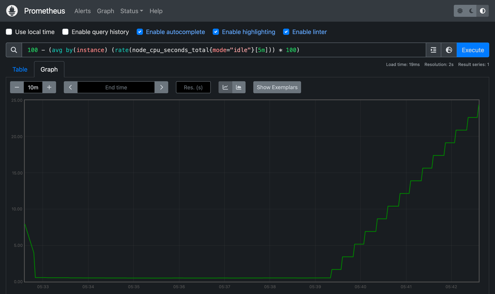
sum()이 없으면 항상 1이 나온다sum(rate(http_requests_total{status=~"5.."}[5m])) / sum(rate(http_requests_total[5m])) * 100
sum() 없이 나누면 왼쪽 {status="500"}은 오른쪽 {status="500"}과 짝지어진다 — 자기 자신을 나눈 값이니 언제나 1.
# sum 없이 — 항상 1 {method="POST", path="/api/orders", status="500"} 1 # sum으로 라벨을 걷어낸 뒤 — 실제 에러율 {} 5.5
status를 라벨에서 없애는 게 핵심이라,
sum() 대신 by로 남길 라벨을 지정해도 된다. 경로별 에러율이 필요하면:
sum by(path) (rate(http_requests_total{status=~"5.."}[5m])) / sum by(path) (rate(http_requests_total[5m])) * 100
(1 - node_memory_MemAvailable_bytes / node_memory_MemTotal_bytes) * 100
rate()가 없다 — 둘 다 Gauge라 지금 값이 곧 답instance, job으로 똑같아 짝이 저절로 맞는다. 에러율 쿼리와 갈린 지점(1 - node_filesystem_avail_bytes{mountpoint="/"} / node_filesystem_size_bytes{mountpoint="/"}) * 100
mountpoint로 하나를 지정해야 한다. 안 하면 /, /boot, 도커 오버레이까지 다 나온다curl -s :9100/metrics | grep "^node_filesystem_size_bytes"로 실제 마운트 지점부터 확인한다.
여러 데이터 소스를 붙여 시각화하는 오픈소스 대시보드 도구. Prometheus 말고도 Loki, Tempo, MySQL, Elasticsearch를 붙일 수 있다.
방법 1 — UI에서 직접
localhost:9090이 아니라 prometheus:9090.
Grafana도 컨테이너 안에서 돌기 때문에 컨테이너 이름으로 찾아가야 한다.
# 방법 2 — provisioning 파일로 자동 등록 apiVersion: 1 datasources: - name: Prometheus type: prometheus access: proxy url: http://prometheus:9090 isDefault: true
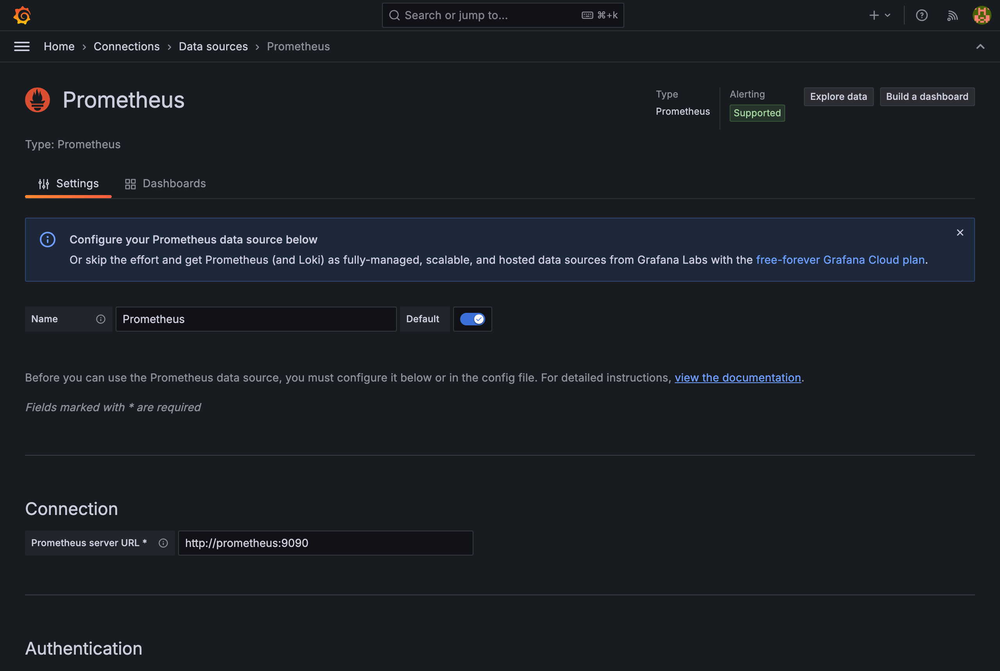
| Panel 타입 | 적합한 데이터 |
|---|---|
| Time series | CPU 사용률, 요청 수, 응답 시간 |
| Stat | 현재 가동 시간, 총 요청 수 |
| Gauge | 디스크 사용률, 메모리 사용률 |
| Table | 인스턴스별 상태, Top N 목록 |
| Bar chart | 서비스별 에러 수, 엔드포인트별 요청 수 |
| Heatmap | 응답 시간 분포, Histogram 버킷 |
| 항목 | 값 |
|---|---|
| Name | instance |
| Type | Query |
| Data source | Prometheus |
| Query | label_values(node_cpu_seconds_total, instance) |
| Multi-value | 활성화 |
100 - (avg by(instance) (rate(node_cpu_seconds_total{ mode="idle", instance=~"$instance"}[5m])) * 100)
드롭다운에서 인스턴스를 고르면 그 인스턴스의 메트릭만 남는다.
서버를 늘리면 label_values()가 찾아낸 만큼 항목도 따라 늘어난다.
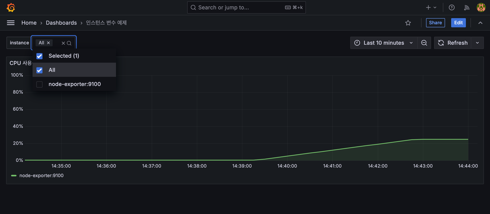
docker-compose 파일 하나로 Prometheus · Grafana · node-exporter를 띄우고, 시스템 모니터링 대시보드 4패널을 만든다.
services: prometheus: image: prom/prometheus:v2.51.0 ports: ["9090:9090"] volumes: - ./prometheus/prometheus.yml:/etc/prometheus/prometheus.yml command: - '--config.file=/etc/prometheus/prometheus.yml' - '--storage.tsdb.retention.time=7d' grafana: image: grafana/grafana:11.4.0 ports: ["3000:3000"] environment: - GF_SECURITY_ADMIN_PASSWORD=admin volumes: - ./provisioning:/etc/grafana/provisioning node-exporter: image: prom/node-exporter:v1.8.1 ports: ["9100:9100"]
> docker compose up -d
| 서비스 | 주소 |
|---|---|
| Prometheus | localhost:9090 |
| Grafana | localhost:3000 · admin/admin |
| node-exporter | localhost:9100/metrics |
--storage.tsdb.retention.time=7d — 로컬 실습이라 7일. 운영에서는 디스크와 맞바꾸는 값이다.
scrape_configs에서 정한다global: scrape_interval: 15s # 수집 주기 evaluation_interval: 15s # 알림 규칙 평가 주기 scrape_configs: # Prometheus 자체 메트릭 - job_name: 'prometheus' static_configs: - targets: ['localhost:9090'] # node-exporter 시스템 메트릭 - job_name: 'node-exporter' static_configs: - targets: ['node-exporter:9100']
scrape_interval: 15s — 이 값이 앞에서 본 시계열의 점 간격이 된다job_name은 그대로 job 라벨이 되어 모든 시계열에 붙는다static_configs지만, 실제 운영에서는 Kubernetes·Consul 같은 서비스 디스커버리를 붙인다DOWN이면 대시보드를 아무리 만져도 빈 그래프만 나온다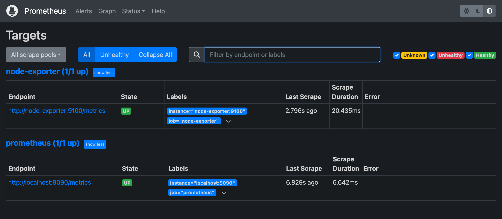
# 1. CPU 사용률 (%) · Unit: Percent (0-100) 100 - (avg by(instance) (rate(node_cpu_seconds_total{mode="idle"}[5m])) * 100) # 2. 메모리 사용률 (%) (1 - node_memory_MemAvailable_bytes / node_memory_MemTotal_bytes) * 100 # 3. 디스크 I/O · Unit: Bytes/sec (IEC) rate(node_disk_read_bytes_total[5m]) rate(node_disk_written_bytes_total[5m]) # 4. 네트워크 트래픽 · Unit: Bytes/sec (IEC) rate(node_network_receive_bytes_total{device!="lo"}[5m]) rate(node_network_transmit_bytes_total{device!="lo"}[5m])
device=~"nvme.*|sd.*"로 실제 장치만 남기거나 범례를 끈다.
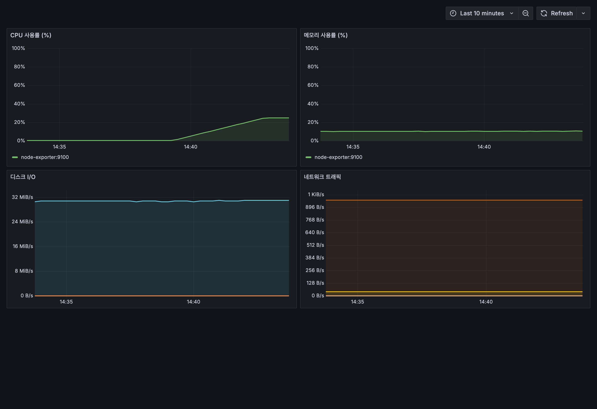
/metrics를 주기적으로 긁어 가는 Pull 방식이다rate() · increase() · histogram_quantile() · avg_over_time() 네 개로 대부분 커버된다rate()는 이 단절을 자동 보정하므로 같은 구간에서도 값이 튀지 않는다. → 슬라이드 10[5m]을 붙여 range vector로 만들어야 한다. → 슬라이드 21DOWN이면 애초에 데이터가 없는 것이라 쿼리나 패널 설정을 만져도 소용없다. → 슬라이드 34node-exporter가 주는 시스템 메트릭에서 한 걸음 더 들어가, Go 애플리케이션에 직접 메트릭을 심는다. HTTP 요청 수와 응답 시간은 물론 주문 건수 같은 비즈니스 지표까지 계측해서 Grafana에 올려본다.
참고 자료
github.com/kenshin579/tutorials-go /monitoring/grafana-metricsprometheus.io/docsprometheus.io/docs/prometheus/latest/querying/basicsgrafana.com/docs/grafana/latestgithub.com/prometheus/node_exportergrafana.com/docs/grafana/latest/dashboards/build-dashboards/best-practicesadvenoh.pe.kr